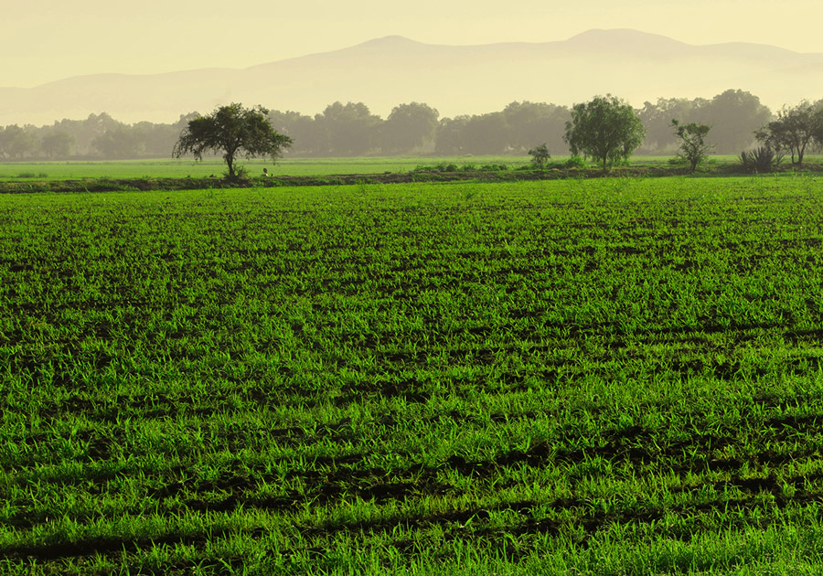

Fotografía de paisaje, acredora del tercer lugar en la convocatoria del Primer concurso de fotografía: Paisajes Naturales de Celaya del IMEC, en 2015, se presentó en una exposición colectiva organizada por el Instituto Municipal de Ecología de Celaya en el Instituto de Arte y Cultura.
